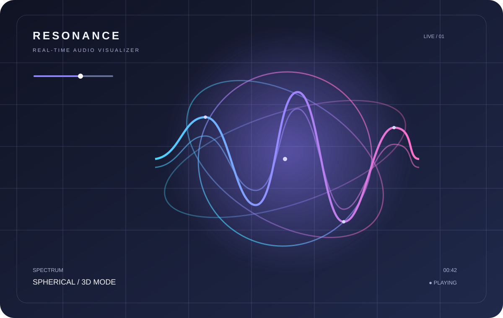

Project / Creative coding / 2026
Resonance
AvailableA browser-based 3D audio visualizer that turns sound into responsive visual experiences. Explore different visualization modes, use a local audio track or connect a microphone.

Overview
Resonance is an independent frontend experiment focused on real-time audio analysis and expressive browser graphics. Its interface combines audio playback controls with a Three.js visualization canvas.
Key features
- — Six audio visualization modes
- — Local audio file playback and playlist
- — Microphone input
- — Real-time audio-reactive 3D visuals
- — Rendering quality controls
Project notes
This project runs as an independent static site inside its own repository folder. No account or backend service is required for its core local-audio experience.